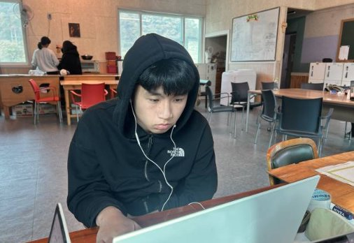
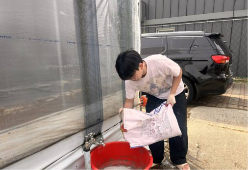
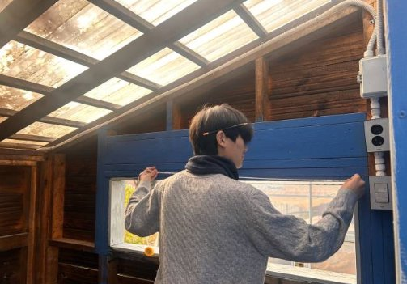

교육철학
하나님의 형상을 회복하며 삶의 힘을 기르는 교육

자유의 맛
삶의 주체가 되는 연습자유란 자신을 종속시키는 요소들로부터 벗어나며, 무언가를 향해 나아갈 자유를 발견함으로 삶의 주체가 되는 것을 의미합니다. 학교는 학생들이 안전하게 실수하고, 끊임없이 이 선택과 책임을 연습할 수 있는 공간을 제공합니다.

사랑의 멋
모든 활동의 기반이 되는 사랑사랑은 하나님 사랑, 자기 사랑, 이웃 사랑, 자연 사랑을 모두 포함합니다. 샬롬자유학교는 학생들이 참여하는 모든 활동에 사랑이 기반이 됩니다.

대안의 삶
배움과 삶의 일치학교에서의 배움을 바탕으로 자신만의 삶의 대안을 찾는 것은 교육의 궁극적인 목표입니다. 졸업 이후 각기 다른 대안의 삶을 선택하더라도, 그 핵심은 학생 시절의 배움이 삶과 일치하는 것에 있습니다. 학생들은 지속적인 경험과 성찰을 통해 자신만의 대안적 삶을 찾아 나섭니다.
교육과정
삶의 힘을 기르는 교육은 다음의 세 영역으로 구성됩니다.
삶의 기초를 세우는 교육
1학기에는 살면서 필요한 건강한 체력, 생활, 소통능력 향상 등 기초 교육을 합니다.
- 비폭력 대화(NVC)
- 세계시민교육
- 걷기여행
삶의 방향을 탐색하는 교육
2학기에는 학교 내부와 외부에서 학생들은 나를 찾고, 사회를 배워 삶의 방향을 찾는 교육을 합니다.
- 몰입주간(중등과정)
- 인턴십(마을, 세미, 정식)
- 사회예비취업과정
- 콩네상점(학생 작업장)
삶의 대안을 모색하는 교육
3학기에는 살아 있는 배움을 찾아 여행을 하고, 이를 우리의 삶에 실천하여 대안적 삶을 모색하는 교육을 합니다.
- 가족회의
- 개인 프로젝트
- 주제학습기행
- 교육공유회
학교 생활
교육과정 속에서 경험하는 일상의 배움과 실천
주3회 아침묵상과 주일예배
하나님에 대하여 알아가기 위하여 주3회 아침묵상을 하고 주일이면 함께 예배를 드립니다. 종교행위에 집중하기보다는 삶이 묻어나고 삶을 위한 시간이기를 바라며 진행됩니다.
일주일에 한 번 마을 청소
일주일에 한 번은 꼭 학교가 위치한 마을에 쓰레기 봉투와 집게를 들고 나가서 청소를 합니다. 아이들은 지속되는 마을청소가 마을을 변화시키고 있음을 경험합니다.
선택하고 책임지는 연습
작게는 들을 수업과 듣지 않을 수업을 선택하고 책임지며, 크게는 자기 삶의 방향을 선택하기 위하여 무엇을 해야 할지 선택하고 책임지는 연습을 합니다. (개인프로젝트, 프리패스, 동아리, 각종 인턴십, 주제학습 학기)
기숙사 생활
사람 사랑을 배우는 소중한 숨은 교육과정입니다. 함께 살아가는 일상 속에서 서로의 다름을 마주할 때, 회피하지 않고 따뜻한 대화와 조정을 통해 서로를 환대하며 건강하게 성장합니다.
학교 공동체
삶을 함께 배우고 실천하는 교육공동체
학생이 중심이 되는 학교
“학교가 누구의 것이지?” 만약 학교의 주인이 학생이라면 교과과정을 편성하는 권한과 책임을 가진 교사가 학생들의 생각과 느낌, 교과과정 편성에 대한 의견과 자율성을 어떻게 존중할 것인지 고민하지 않을 수 없게 됩니다. 샬롬자유학교 교육과정의 중심에는 학생이 있습니다.
갈등을 해결하고 조정하는 기숙 공동체
기숙사 생활은 사람 사랑을 배우는 가장 중요한 숨은 교육과정입니다. 24시간 함께 생활하며 마주하는 서로 다른 생각과 갈등을 깊은 대화와 따뜻한 화해로 풀어나가며, 서로를 품고 더불어 살아가는 성숙한 공동체로 성장합니다.
지역사회 연대와 하나님 나라 운동
대안의 삶이 작은 마을 단위에서라도 실천되기 위하여 지역사회와 연대하는 교육과정을 진행합니다. 학기에 한 번 이상 주민들과 소통하는 장을 마련하고, 교육과정 공유회와 졸업식을 마을과 함께 나누며, 마을 장터 참여와 마을 축제 공연을 통해 하나님 나라 운동을 실천합니다.